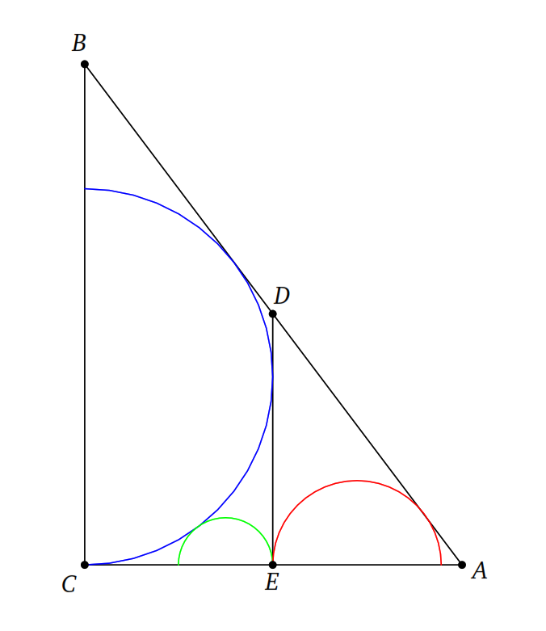

| 2021 |
Kabupaten |
Aljabar 220219075441 |
KSN-K Matematika SMA 2021 Nomor 1 (Kemampuan Dasar)
Misal \(u_1,u_2,u_3,\cdots\) barisan aritmatika dengan suku-suku real positif. Jika \(\dfrac{u_1+u_2}{u_3}=\dfrac{11}{21}\), maka nilai \(\dfrac{u_2+u_3}{u_1}\) adalah ...
|
| 2021 |
Kabupaten |
Kombinatorika 220219075458 |
KSN-K Matematika SMA 2021 Nomor 2(Kemampuan Dasar)
Koefisien \(x^7\) pada penjabaran \[(1+x)(2+x^2)(3+x^3)(4+x^4)(5+x^5)\] adalah ...
|
| 2021 |
Kabupaten |
Aljabar 2202191040PM |
KSN-K Matematika SMA 2021 Nomor 3 (Kemampuan Dasar)
Diberikan fungsi \(f\) terdefinisi untuk semua bilangan real \(x\) selain \(0\) dan \(1\), memenuhi \[(x+1)f(-x)+\dfrac{1-x}{4x}f\left(\dfrac{1}{x}\right)=\dfrac{100(x^2+4)}{x}.\] Hitung nilai dari \(f (2) + f (3) + f (4) + \cdots + f (400).\)
|
| 2021 |
Kabupaten |
Teori Bilangan 2202191046PM |
KSN-K Matematika SMA 2021 Nomor 4 (Kemampuan Dasar)
Diketahui bilangan bulat positif \(A\) dan \(B\) jika dibagi \(5\) berturut-turut bersisa \(2\) dan \(3\). Sisa pembagian bilangan \(A(A+ 1) + 5B\) oleh \(25\) adalah ...
|
| 2021 |
Kabupaten |
Teori Bilangan 2202191047PM |
KSN-K Matematika SMA 2021 Nomor 5 (Kemampuan Dasar)
Bilangan asli \(n\) dikatakan menarik jika terdapat suku banyak (polinom) dengan koefisien bilangan bulat \(P(x)\) sehingga \(P(7) = 2021\) dan \(P(n) = 2045\). Banyaknya bilangan prima menarik adalah ...
|
| 2021 |
Kabupaten |
Geometri 2202191051PM |
KSN-K Matematika SMA 2021 Nomor 6 (Kemampuan Dasar)
Pada gambar di bawah ini, sebuah persegi panjang dibagi dua menjadi \(2\) buah persegi yang panjang sisinya \(6\) cm. Luas total daerah yang diarsir adalah ... cm\(^2\).

|
| 2021 |
Kabupaten |
Geometri 2202191104PM |
KSN-K Matematika SMA 2021 Nomor 7 (Kemampuan Dasar)
Pada suatu lingkaran dengan jari-jari \(r\), terdapat segiempat talibusur \(ABCD\) dengan \(AB = 8\) dan \(CD = 5\). Sisi \(AB\) dan \(DC\) diperpanjang dan berpotongan di luar lingkaran di titik \(P\). Jika \(\angle APD = 60^\circ\) dan \(BP = 6\), maka nilai dari \(r^2\) adalah ...
|
| 2021 |
Kabupaten |
Teori Bilangan 2202191109PM |
KSN-K Matematika SMA 2021 Nomor 8 (Kemampuan Dasar)
Bilangan \(1, 2, 3,\cdots, 999\) digit-digitnya disusun membentuk angka baru \(m\) dengan menuliskan semua digit bilangan-bilangan tadi dari kiri ke kanan. Jadi, \(m = 1234\cdots 91011\cdots 999\). Hasil penjumlahan digit ke-2021, 2022, 2023 dari \(m\) adalah ...
|
| 2021 |
Kabupaten |
Kombinatorika 2202191112PM |
KSN-K Matematika SMA 2021 Nomor 9 (Kemampuan Dasar)
Diketahui ada \(6\) pasang suami-istri. Dari keenam pasangan tersebut, dipilih \(6\) orang secara acak. Banyaknya cara untuk memilih \(6\) orang tersebut sehingga paling banyak terdapat sepasang suami-istri adalah ...
|
| 2021 |
Kabupaten |
Geometri 2202191113PM |
KSN-K Matematika SMA 2021 Nomor 10 (Kemampuan Dasar)
Diketahui segitiga \(ABC\) dengan \(AB > AC\). Garis bagi sudut \(BAC\) memotong \(BC\) di titik \(D\). Titik \(E\) dan \(F\) berturut-turut terletak pada sisi \(AC\) dan \(AB\) sehingga \(DE\) sejajar \(AB\) dan \(DF\) sejajar \(AC\). Lingkaran luar \(\triangle BCE\) memotong sisi \(AB\) di titik \(K\). Jika luas segitiga \(CDE\) adalah \(75\) dan luas segitiga \(DEF\) adalah \(85\), maka luas segiempat \(DEK F\) adalah ...
|
| 2021 |
Kabupaten |
Teori Bilangan 2202191126PM |
KSN-K Matematika SMA 2021 Nomor 11 (Kemampuan Lanjut)
Jika \(a > 1\) suatu bilangan asli sehingga hasil penjumlahan semua bilangan real \(x\) yang memenuhi persamaan \[\lfloor x\rfloor^2-2ax+a=0\] adalah \(51\), maka \(a\) adalah ...
Catatan: \(\lfloor x\rfloor\) menyatakan bilangan bulat terbesar yang tidak lebih dari \(x\).
|
| 2021 |
Kabupaten |
Aljabar 2202191130PM |
KSN-K Matematika SMA 2021 Nomor 12 (Kemampuan Lanjut)
Diketahui bilangan real \(a, b,\) dan \(c\) memenuhi pertidaksamaan \[|ax^2+bx+c|\le 1\] untuk setiap \(x\) anggota bilangan real dengan \(0 \le x \le 1\). Nilai maksimum yang mungkin dari \(23a + 22b + 21c\) adalah ...
|
| 2021 |
Kabupaten |
Teori Bilangan 2202191138PM |
KSN-K Matematika SMA 2021 Nomor 13 (Kemampuan Lanjut)
Diberikan \(x, y,\) dan \(n\) bilangan asli yang memenuhi \[x^2+(y+2)x+(n+1)y=n^2+252.\] Nilai \(y\) terbesar yang mungkin adalah ...
|
| 2021 |
Kabupaten |
Teori Bilangan 2202191143PM |
KSN-K Matematika SMA 2021 Nomor 14 (Kemampuan Lanjut)
Jika dua digit terakhir dari \(a^{777}\) adalah \(77\), maka dua digit terkahir dari \(a\) adalah ...
|
| 2021 |
Kabupaten |
Aljabar 2202191145PM |
KSN-K Matematika SMA 2021 Nomor 15 (Kemampuan Lanjut)
Bilangan asli ganjil \(b\) terbesar sehingga barisan bilangan asli \[a_n=n^2+19n+b\] memenuhi \(FPB (a_n, a_{n+1}) = FPB (a_{n+2}, a_{n+1})\) untuk setiap bilangan asli \(n\) adalah ...
|
| 2021 |
Kabupaten |
Geometri 2202191146PM |
KSN-K Matematika SMA 2021 Nomor 16 (Kemampuan Lanjut)
Diberikan segitiga \(ABC\) dengan \(AB = 6, BC = 7,\) dan \(CA = 8\). Jika \(I\) adalah titik potong ketiga garis bagi segitiga \(ABC\), maka \(AI^2\) adalah ...
|
| 2021 |
Kabupaten |
Kombinatorika 2202191150PM |
KSN-K Matematika SMA 2021 Nomor 17 (Kemampuan Lanjut)
Banyak fungsi (pemetaan) dari \(A =\{ 1, 2, 3, 4, 5\}\) ke \(B = \{ 6, 7, 8, 9, 10 \}\) dengan syarat \(9\) dan \(10\) mempunyai prapeta, yaitu ada \(x\) dan \(y\) di \(A\) sehingga \(f (x) = 9\) dan \(f ( y) = 10\) adalah ....
|
| 2021 |
Kabupaten |
Kombinatorika 2202191154PM |
KSN-K Matematika SMA 2021 Nomor 18 (Kemampuan Lanjut)
Banyaknya barisan ternary (sukunya \(0, 1,\) atau \(2\)) yang memuat \(15\) suku, memuat tepat \(5\) (angka) \(0\) dan setiap di antara dua (angka) \(0\) ada paling sedikit dua suku bukan \(0\) adalah ...
|
| 2021 |
Kabupaten |
Kombinatorika 2202191155PM |
KSN-K Matematika SMA 2021 Nomor 19 (Kemampuan Lanjut)
Sebuah papan catur berukuran \(109 \times 21\) akan dipasangi beberapa ubin berukuran \(3 \times 1\). Berapa ubin terbanyak yang bisa dipasang pada papan sehingga tidak ada \(2\) ubin yang bertumpuk atau bersentuhan?
(Bersentuhan pada titik sudut ubin juga tidak diperbolehkan)
|
| 2021 |
Kabupaten |
Geometri 2202191155PM |
KSN-K Matematika SMA 2021 Nomor 20 (Kemampuan Lanjut)
Diberikan segitiga siku-siku \(ABC\) dengan \(\angle BCA = 90^\circ\). Dibuat setengah lingkaran \(\omega_1\) dengan titik pusat di \(BC\) sedemikian sehingga \(\omega_1\) menyinggung \(AC\) dan \(AB\). Titik \(D\) dan \(E\) berturut-turut terletak pada sisi \(AB\) dan \(AC\) sedemikian sehingga \(DE\) sejajar \(BC\) dan \(DE\) menyinggung \(\omega_1\). Dibuat setengah lingkaran \(\omega_2\) dengan titik pusat di \(AE\) sedemikian sehingga \(\omega_2\) menyinggung \(AD\) dan \(DE\). Dibuat setengah lingkaran \(\omega_3\) dengan titik pusat di \(C E\) sedemikian sehingga \(\omega_3\) menyinggung \(DE\) dan \(\omega_1\), seperti pada gambar di bawah ini.

Jika \(2AC + 5BC = 5AB\), maka perbandingan panjang jari-jari \(\omega_2\) dan \(\omega_3\) adalah \(k : 25\). Nilai dari \(k\) adalah ...
|
| 2020 |
Kabupaten |
Aljabar 2203120537AM |
KSN-K Matematika SMA 2020 Nomor 1 (Kemampuan Dasar)
Misalkan \[f(x)=\dfrac{3(x-1)(x-2)}{2}+\dfrac{(x-2)(x-3)}{2}-2(x-1)(x-3).\] Nilai dari \(f(20)\) adalah...
|
| 2020 |
Kabupaten |
Kombinatorika 2203120543AM |
KSN-K Matematika SMA 2020 Nomor 2 (Kemampuan Dasar)
Diberikan sebuah kubus besar berukuran \(3\times 3\times 3\) yang seluruh permukaannya dicat dengan warna merah. Kubus tersebut dipotong menjadi \(27\) kubus satuan (kubus berukuran \(1\times 1\times 1\)). Diketahui bahwa Amir mengambil satu kubus kecil yang salah satu sisinya berwarna merah. Peluang kubus kecil yang diambil Amir memiliki tepat dua sisi berwarna merah adalah...
|
| 2020 |
Kabupaten |
Kombinatorika 2203120547AM |
KSN-K Matematika SMA 2020 Nomor 3 (Kemampuan Dasar)
Diberikan trapesium siku-siku seperti pada gambar di bawah ini.

Jika \(AB = 1, BD =\sqrt{7},\) dan \(AD = CD\) maka luas trapesium tersebut adalah ...
|
| 2020 |
Kabupaten |
Aljabar 2203120553AM |
KSN-K Matematika SMA 2020 Nomor 4 (Kemampuan Dasar)
Misalkan \(x,y\) bilangan asli sehingga \(2x + 3y = 2020\). Nilai terbesar yang mungkin dari \(3x + 2y\) adalah ...
|
| 2020 |
Kabupaten |
Aljabar 2203120553AM |
KSN-K Matematika SMA 2020 Nomor 5 (Kemampuan Dasar)
Suatu barisan bilangan riil \(a_1,a_2,a_3,\cdots\) memenuhi \(a_1=1,a_2=\dfrac{3}{5},\) dan \[\dfrac{1}{a_n}=\dfrac{2}{a_{n-1}}-\dfrac{1}{a_{n-2}} \text{ untuk setiap }n\ge 3.\] Bilangan \(a_{2020}\) dapat ditulis sebagai \(\dfrac{p}{q}\) dengan \(p\) dan \(q\) bilangan asli relatif prima. Nilai \(p + q\) adalah ...
|
| 2020 |
Kabupaten |
Kombinatorika 2203120600AM |
KSN-K Matematika SMA 2020 Nomor 6 (Kemampuan Dasar)
Diketahui \(S\) adalah himpunan semua titik \((x, y)\) pada bidang Cartesius, dengan \(x, y\) bilangan bulat, \(0\le x \le 20\) dan \(0\le y \le 19\). Banyaknya cara memilih dua titik berbeda di \(S\) sehingga titik tengahnya juga ada di \(S\) adalah ...
Catatan: Dua titik \(P (a, b)\) dan \(Q(c; d)\) berbeda jika \(a\ne c\) atau \(b \ne d\). Pasangan titik \((P, Q)\) dan \((Q, P )\) dianggap sama.
|
| 2020 |
Kabupaten |
Geometri 2203120606AM |
KSN-K Matematika SMA 2020 Nomor 7 (Kemampuan Dasar)
Diketahui segitiga \(ABC\) dengan panjang sisi \(BC = 3, CA = 4,\) dan \(AB = 5\). Titik \(P\) terletak pada \(AB\) dan \(Q\) terletak \(AC\) sehingga \(AP = AQ\) dan garis \(P Q\) membagi segitiga \(ABC\) menjadi dua daerah dengan luas yang sama. Panjang segmen \(P Q\) adalah ...
|
| 2020 |
Kabupaten |
Aljabar 2203120610AM |
KSN-K Matematika SMA 2020 Nomor 8 (Kemampuan Dasar)
Himpunan penyelesaian dari persamaan \[|x+1|+\left|\dfrac{19}{x-1}\right|=\dfrac{20-x^2}{1-x}\] adalah interval \([a,b)\). Nilai dari \(b-a\) adalah ...
|
| 2020 |
Kabupaten |
Teori Bilangan 2203120612AM |
KSN-K Matematika SMA 2020 Nomor 9 (Kemampuan Dasar)
Misalkan \(n\ge 2\) bilangan asli sedemikian sehingga untuk setiap bilangan asli \(a, b\) dengan \(a + b = n\) berlaku \(a^2+b^2\) merupakan bilangan prima. Hasil penjumlahan semua bilangan asli \(n\) semacam itu adalah ...
|
| 2020 |
Kabupaten |
Kombinatorika 2203120614AM |
KSN-K Matematika SMA 2020 Nomor 10 (Kemampuan Dasar)
Suatu komite yang terdiri dari beberapa anggota hendak menghadiri \(40\) rapat. Diketahui bahwa setiap rapat dihadiri tepat \(10\) anggota komite dan setiap dua anggota menghadiri rapat bersama paling banyak satu kali. Banyaknya anggota komite terkecil yang mungkin adalah
|
| 2020 |
Kabupaten |
Geometri 2203120901AM |
KSN-K Matematika SMA 2020 Nomor 1 (Kemampuan Lanjut)
Diberikan segitiga \(ABC\) dengan \(\angle ACB = 48^\circ\). Garis bagi \(\angle BAC\) memotong sisi \(BC\) dan lingkaran luar \(ABC\) berturut-turut di titik \(D\) dan \(E\). Jika \(AC = AB +DE\) maka \(\angle ABC = \cdots \)
|
| 2020 |
Kabupaten |
Teori Bilangan 2203120905AM |
KSN-K Matematika SMA 2020 Nomor 2 (Kemampuan Lanjut)
Misalkan \(p\) suatu bilangan prima sehingga terdapat pasangan bilangan asli \((m, n)\) dengan \(n>1\) yang memenuhi \[mn^2+mnp+m+n+p=mn+mp+np+n^2+2020.\] Semua nilai \(p\) yang mungkin adalah ...
|
| 2020 |
Kabupaten |
Polinom 2203120910AM |
KSN-K Matematika SMA 2020 Nomor 3 (Kemampuan Lanjut)
Misalkan \(P (x)\) suatu polinom sehingga \(P (x) + 8x = P (x-2) + 6x\). Jika \(P (1) = 1\), maka \(P (2) =\cdots\)
|
| 2020 |
Kabupaten |
Kombinatorika 2203120910AM |
KSN-K Matematika SMA 2020 Nomor 4 (Kemampuan Lanjut)
Banyaknya tripel bilangan bulat \((x, y, z)\) dengan \(0 \le x \le y \le z\) yang memenuhi persamaan \(x + y + z = 32\) adalah
|
| 2020 |
Kabupaten |
Kombinatorika 2203121156AM |
KSN-K Matematika SMA 2020 Nomor 5 (Kemampuan Lanjut)
Misalkan \(ABC\) segitiga dan \(P,Q,R\) titik pada sisi \(BC,CA,AB.\) Jika luas segitiga \(ABC\) sama dengan 20 kali luas segitiga \(PQR\) dan \(\dfrac{AQ}{AC}+\dfrac{BR}{BA}+\dfrac{CP}{CB}=1\), maka \[\left(\dfrac{AQ}{AC}\right)^2+\left(\dfrac{BR}{BA}\right)^2+\left(\dfrac{CP}{CB}\right)^2=\cdots\]
|
| 2020 |
Kabupaten |
Teori Bilangan 2203121159AM |
KSN-K Matematika SMA 2020 Nomor 6 (Kemampuan Lanjut)
Kwartet bilangan asli \((a,b,c,d)\) dikatan keren jika memenuhi \[b=a^2+1, \hspace{1cm} c=b^2+1, \hspace{1cm} d=c^2+1\] dan \(\tau(a)+\tau(b)+\tau(c)+\tau(d)\) bilangan ganjil. Banyaknya kwartet keren \((a,b,c,d)\) dengan \(a,b,c,d<10^6\) adalah ... (\(\tau(n)\) menyatakan banyaknya bilangan asli yang merupakan faktor dari \(n\))
|
| 2020 |
Kabupaten |
Aljabar 2203121205PM |
KSN-K Matematika SMA 2020 Nomor 7 (Kemampuan Lanjut)
Misalkan \(a, b, c\) bilangan real tak negatif dengan \(a + 2b + 3c = 1\). Nilai maksimum dari \(ab + 2ac\) adalah ...
|
| 2020 |
Kabupaten |
Teori Bilangan 2203121208PM |
KSN-K Matematika SMA 2020 Nomor 8 (Kemampuan Lanjut)
Bilangan asli \(n\) terkecil sehingga \(n + 3\) dan \(2020n + 1\) bilangan kuadrat sempurna adalah ...
|
| 2020 |
Kabupaten |
Kombinatorika 2203121211PM |
KSN-K Matematika SMA 2020 Nomor 9 (Kemampuan Lanjut)
Lima tim bertanding satu sama lain dimana setiap dua tim bertanding tepat sekali. Dalam setiap pertandingan, masing-masing tim memiliki peluang 1/2 untuk menang dan tidak ada pertandingan yang berakhir seri. Peluang bahwa setiap tim menang minimal sekali dan kalah minimal sekali adalah ...
|
| 2020 |
Kabupaten |
Geometri 2203121211PM |
KSN-K Matematika SMA 2020 Nomor 10 (Kemampuan Lanjut)
Misalkan \(H\) adalah titik tinggi dari segitiga lancip \(ABC\) dan \(P\) adalah titik tengah \(CH\). Jika \(AP = 3, BP = 2\) dan \(CP = 1\), maka panjang sisi \(AB\) adalah ...
Catatan: Titik tinggi suatu segitiga adalah perpotongan ketiga garis tinggi dari segitiga tersebut.
|
| 2019 |
Kabupaten |
Geometri 2203120246PM |
OSN-K Matematika SMA 2019 Nomor 1 (Kemampuan Dasar)
Pak Budi memiliki sawah berbentuk huruf \(L\). Jika diketahui bahwa sawahnya Pak Budi hanya memiliki sisi yang panjangnya \(5\) meter dan \(10\) meter dan semua sudut sawahnya siku-siku, luas sawah pak Budi adalah ... meter persegi.
|
| 2019 |
Kabupaten |
Teori Bilangan 2203120248PM |
OSN-K Matematika SMA 2019 Nomor 2 (Kemampuan Dasar)
Jika sebuah jam sekarang menunjukkan pukul 13:00 maka 2019 menit yang lalu jam tersebut menunjukkan pukul ...
|
| 2019 |
Kabupaten |
Teori Bilangan 2203120249PM |
OSN-K Matematika SMA 2019 Nomor 3 (Kemampuan Dasar)
Kedua akar persamaan kuadrat \(x^2-111x + k = 0\) adalah bilangan prima. Nilai \(k\) adalah ...
|
| 2019 |
Kabupaten |
Kombinatorika 2203120249PM |
OSN-K Matematika SMA 2019 Nomor 4 (Kemampuan Dasar)
Ani dan Banu bermain dadu enam sisi. Jika dadu yang keluar bernilai genap, maka Ani mendapatkan skor 1 sedangkan jika dadu yang keluar bernilai ganjil, maka Banu yang mendapatkan skor 1. Pemenang dari permainan ini adalah orang pertama yang mendapatkan skor total 5. Setelah dilakukan pelemparan dadu sebanyak 5 kali, Ani mendapat skor 4 dan Banu mendapatkan skor 1. Peluang Ani memenangkan permainan ini adalah ...
|
| 2019 |
Kabupaten |
Aljabar 2203120252PM |
OSN-K Matematika SMA 2019 Nomor 5 (Kemampuan Dasar)
Diketahui \(a + 2b = 1, b + 2c = 2,\) dan \(b \ne 0\). Jika \(a + nb + 2018c = 2019\) maka nilai \(n\) adalah ...
|
| 2019 |
Kabupaten |
Aljabar 2203120253PM |
OSN-K Matematika SMA 2019 Nomor 6 (Kemampuan Dasar)
Misalkan \(a=2\sqrt{2}-\sqrt{8-4\sqrt{2}}\) dan \(b=2\sqrt{2}+\sqrt{8-4\sqrt{2}}\). Jika \(\dfrac{a}{b}+\dfrac{b}{a}=x+y\sqrt{2}\) dengan \(x,y\) bulat, maka nilai \(x+y\) adalah ...
|
| 2019 |
Kabupaten |
Geometri 2203120256PM |
OSN-K Matematika SMA 2019 Nomor 7 (Kemampuan Dasar)
Diberikan suatu trapesium \(ABCD\) dengan \(AB\) sejajar \(CD\). Misalkan titik \(P\) dan \(Q\) berturut-turut pada \(AD\) dan \(BC\) sedemikian sehingga \(PQ\) sejajar \(AB\) dan membagi trapesium menjadi dua bagian yang sama luasnya. Jika \(AB = 17\) dan \(DC = 7\) maka nilai \(PQ\) adalah ...
|
| 2019 |
Kabupaten |
Kombinatorika 2203120258PM |
OSN-K Matematika SMA 2019 Nomor 8 (Kemampuan Dasar)
Tujuh buah bendera dengan motif berbeda akan dipasang pada 4 tiang bendera. Pada masing-masing tiang bendera bisa dipasang sebanyak nol, satu, atau lebih dari satu bendera. Banyaknya cara memasang bendera tersebut adalah ...
|
| 2019 |
Kabupaten |
Teori Bilangan 2203120259PM |
OSN-K Matematika SMA 2019 Nomor 9 (Kemampuan Dasar)
Misalkan \(n\) adalah bilangan asli terkecil yang semua digitnya sama dan sedikitnya terdiri dari \(2019\) digit. Jika \(n\) habis dibagi \(126\), maka hasil penjumlahan semua digit dari \(n\) adalah ...
|
| 2019 |
Kabupaten |
Teori Bilangan 2203120300PM |
OSN-K Matematika SMA 2019 Nomor 10 (Kemampuan Dasar)
Untuk sebarang bilangan real \(x\), simbol \(\lfloor x\rfloor\) menyatakan bilangan bulat terbesar yang tidak lebih besar daripada \(x\), sedangkan \(\lceil x\rceil \) menyatakan bilangan bulat terkecil yang tidak lebih kecil dibanding \(x.\) Interval \([a, b)\) adalah himpunan semua bilangan real \(x\) yang memenuhi \[\lfloor 2x\rfloor^2=\lceil x\rceil+7\] Nilai \(a\cdot b\) adalah ...
|
| 2019 |
Kabupaten |
Teori Bilangan 2203120306PM |
OSN-K Matematika SMA 2019 Nomor 1 (Kemampuan Lanjut)
Sisa pembagian \(1111^{2019}\) oleh 11111 adalah ...
|
| 2019 |
Kabupaten |
Geometri 2203120307PM |
OSN-K Matematika SMA 2019 Nomor 2 (Kemampuan Lanjut)
Diberikan segitiga \(ABC\) dengan \(D\) pertengahan \(AC\), \(E\) pertengahan \(BD\), dan \(H\) merupakan pencerminan dari \(A\) terhadap \(E\). Jika \(F\) perpotongan antara \(AH\) dengan \(BC\), maka nilai \(\dfrac{AF}{FH}\) sama dengan ...
|
| 2019 |
Kabupaten |
Kombinatorika 2203120310PM |
OSN-K Matematika SMA 2019 Nomor 3 (Kemampuan Lanjut)
Banyaknya bilangan delapan digit yang setiap digitnya adalah 1 atau 2 tetapi tidak memuat tiga digit 1 berurutan adalah ...
|
| 2019 |
Kabupaten |
Aljabar 2203120312PM |
OSN-K Matematika SMA 2019 Nomor 4 (Kemampuan Lanjut)
Misalkan \(f(x)=1+\dfrac{90}{x}.\) Nilai terbesar \(x\) yang memenuhi \[\underbrace{f(f(\cdots(f(x))\cdots))}_{2019 \text{ kali}}=x.\] adalah ...
|
| 2019 |
Kabupaten |
Geometri 2203120330PM |
OSN-K Matematika SMA 2019 Nomor 5 (Kemampuan Lanjut)
Misalkan \(ABCD\) adalah persegi dengan panjang sisi \(4\). Lingkaran-lingkaran \(x, y, z\) dengan jari-jari sama mempunyai pusat di dalam persegi sedemikian sehingga lingkaran \(x\) menyinggung sisi \(AB\) dan \(AD\), lingkaran \(y\) menyinggung sisi \(AB\) dan \(BC\), serta lingkaran \(z\) menyinggung sisi \(DC\), lingkaran \(x\), dan lingkaran \(y\). Diketahui jari-jari lingkaran \(x\) dapat dinyatakan dengan \(n\sqrt{m}\) dengan \(m\) dan \(n\) bilangan bulat positif. Nilai \(m\) adalah ...
|
| 2019 |
Kabupaten |
Teori Bilangan 2203120333PM |
OSN-K Matematika SMA 2019 Nomor 6 (Kemampuan Lanjut)
Semua bilangan bulat \(n\) sehingga \(n^4+16n^3+71n^2+56n\) merupakan bilangan kuadrat tak nol adalah ...
|
| 2019 |
Kabupaten |
Geometri 2203120335PM |
OSN-K Matematika SMA 2019 Nomor 7 (Kemampuan Lanjut)
Diberikan jajar genjang \(ABCD\), dengan \(\angle ABC = 105^\circ\). Titik \(M\) berada di dalam jajar genjang sehingga segitiga \(BMC\) sama sisi dan \(\angle CMD = 135^\circ\). Jika \(K\) pertengahan sisi \(AB\), maka besarnya \(\angle BKC\) sama dengan ... derajat.
|
| 2019 |
Kabupaten |
Aljabar 2203120337PM |
OSN-K Matematika SMA 2019 Nomor 8 (Kemampuan Lanjut)
Bilangan real terbesar \(M\) sehingga untuk setiap \(x\) positif berlaku \[(x+1)(x+3)(x+5)(x+11)\ge Mx\] adalah ...
|
| 2019 |
Kabupaten |
Teori Bilangan 2203120339PM |
OSN-K Matematika SMA 2019 Nomor 9 (Kemampuan Lanjut)
Banyaknya tripel bilangan bulat \((m, n, p)\) dengan \(p\) prima yang memenuhi \[p^2n^2-3mn=21p-m^2\] adalah ...
|
| 2019 |
Kabupaten |
Kombinatorika 2203120341PM |
OSN-K Matematika SMA 2019 Nomor 10 (Kemampuan Lanjut)
Suatu lomba matematika diikuti oleh 2019 peserta. Untuk setiap dua peserta lomba, keduanya saling mengenal atau saling tidak mengenal. Diketahui bahwa tidak ada tiga orang peserta lomba yang ketiganya saling mengenal satu sama lain. Misalkan \(m\) adalah bilangan asli sehingga: - Masing-masing peserta mengenal paling banyak m peserta lainnya.
- Untuk setiap bilangan asli \(k\) dengan \(1 \le k \le m,\) minimal terdapat satu orang peserta yang mengenal tepat \(k\) peserta lainnya.
Nilai \(m\) terbesar yang mungkin adalah ...
|
| 2021 |
Nasional |
Aljabar 2202260915AM |
Penyisihan LMNas 32 UGM Tingkat SMA 2021 Nomor 1 (Pilihan Ganda)
Diketahui \(x =\dfrac{a}{b}\) dengan FPB\((a, b) = 1\) merupakan solusi dari persamaan \[\sqrt{x+3}-\sqrt{x-1}=1.\] Nilai \(a + b =\cdots\)
- 3
- 5
- 11
- 13
- 17
|
| 2021 |
Nasional |
Aljabar 2202260924AM |
Penyisihan LMNas 32 UGM Tingkat SMA 2021 Nomor 2 (Pilihan Ganda)
Dinotasikan \(S(n)\) sebagai penjumlahan dari digit \(n\). Sebagai contoh, \(S(13) = 1 + 3 = 4\). Nilai dari \[\sum_{n=1}^{2021}S(n)(-1)^n\] adalah...
- −1011
- -1010
- -1001
- -1111
- -1100
|
| 2021 |
Nasional |
Kombinatorika 2203130809AM |
Penyisihan LMNas 32 UGM Tingkat SMA 2021 Nomor 3 (Pilihan Ganda)
Dua belas bola yang terdiri dari 8 bola abu-abu identik, 3 bola putih identik, dan 1 bola hitam akan diletakkan pada 4 kotak identik. Banyak cara menaruh bola-bola tersebut jika di dalam tiap kotak, bola abu-abu lebih banyak daripada bola putih adalah ...
- 13
- 15
- 17
- 20
- 22
|
| 2021 |
Nasional |
Geometri 2203130821AM |
Penyisihan LMNas 32 UGM Tingkat SMA 2021 Nomor 4 (Pilihan Ganda)
Diberikan segilima beraturan dan 3 buah segitiga identik seperti pada gambar.

Jika \(O\) adalah titik tengah segilima beraturan, maka perbandingan luas \(\triangle AOB : △\triangle BOC|\) adalah ...
- \((2\sin 72^\circ ):1\)
- \((2\cos 72^\circ ):1\)
- \((\cos 72^\circ ):2\)
- \((\sin 72^\circ ):2\)
- \((\sin 72^\circ\cos 72^\circ ):2\)
|
| 2021 |
Nasional |
Aljabar 2203130811AM |
Penyisihan LMNas 32 UGM Tingkat SMA 2021 Nomor 5 (Pilihan Ganda)
Diberikan barisan \((a_n)\) yang memenuhi \[a_{n+1}=\dfrac{a_na_{n-1}}{\sqrt{4(a_{n-1})^2}-4(a_n)^2}.\] Jika \(a_1=\dfrac{1}{\sqrt{2}}\) dan \(a_2=\dfrac{1}{2},\) nilai dari \[2^{2526}\prod_{n=1}^{100}a_n\] adalah ...
- \(\dfrac{1}{4}\)
- \(\dfrac{1}{2}\)
- \(1\)
- \(2\)
- \(4\)
|
| 2021 |
Nasional |
Aljabar 2203130827AM |
Penyisihan LMNas 32 UGM Tingkat SMA 2021 Nomor 6 (Pilihan Ganda)
Diberikan x dan y merupakan bilangan asli yang memenuhi \[x+y^2+x^3=1481.\] Nilai minimum \(xy\) adalah ....
- \(72\)
- \(248\)
- \(296\)
- \(312\)
- \(344\)
|
| 2021 |
Nasional |
Kombinatorika 2203130829AM |
Penyisihan LMNas 32 UGM Tingkat SMA 2021 Nomor 7 (Pilihan Ganda)
Misalkan \(L = \{1000, 1101, 2382, 3273, 3394, 4045\}\). Banyaknya fungsi \(f : L\to L\) sedemikian sehingga untuk setiap \(n \in L\), \(n + f(n)\) merupakan bilangan genap adalah ...
- \(316\)
- \(729\)
- \(361\)
- \(646\)
- \(900\)
|
| 2021 |
Nasional |
Geometri 2203130832AM |
Penyisihan LMNas 32 UGM Tingkat SMA 2021 Nomor 8 (Pilihan Ganda)
Diberikan persegi \(ABCD\). Titik \(P\) dan \(Q\) berturut-turut terletak pada sisi \(CD\) dan \(AD\) sedemikian hingga \(\angle BPQ=90^\circ\). Jika \(\angle PAQ=\arcsin\left(\dfrac{3}{5}\right)\) dan \(\dfrac{BQ}{AP}=\dfrac{\sqrt{m}}{n},\) dengan \(m\) dan \(n\) bilangan asli relatif prima, maka \(m-n=\cdots\)
- \(11\)
- \(12\)
- \(13\)
- \(14\)
- \(15\)
|
| 2021 |
Nasional |
Aljabar 2203130836AM |
Penyisihan LMNas 32 UGM Tingkat SMA 2021 Nomor 9 (Pilihan Ganda)
Nilai dari \[\prod_{n=1}^{89}(\tan(n^\circ)\cos(1^\circ)+\sin(1^\circ))\] adalah ...
- \(\sec(1^\circ)\)
- \(\cot(1^\circ)\)
- \(\cot(89^\circ)\)
- \(\csc(1^\circ)\)
- \(\tan(45^\circ)\)
|
| 2021 |
Nasional |
Teori Bilangan 2203130838AM |
Penyisihan LMNas 32 UGM Tingkat SMA 2021 Nomor 10 (Pilihan Ganda)
Diketahui \(B=\left\{\dfrac{1}{3},\dfrac{2}{3},\cdots,\dfrac{20}{3}\right\}\cup \left\{\dfrac{1}{5},\dfrac{2}{5},\cdots,\dfrac{21}{5}\right\}\). Jika terdapat \(m,n\in B\) sehingga berlaku:
(a) \(n\) tidak bulat
(b) \(m\times n\) prima.
maka nilai max\(\left(\dfrac{m}{n}\right)\) adalah ...
- \(\dfrac{50}{3}\)
- \(\dfrac{25}{2}\)
- \(\dfrac{50}{9}\)
- \(\dfrac{63}{5}\)
- \(\dfrac{63}{25}\)
|